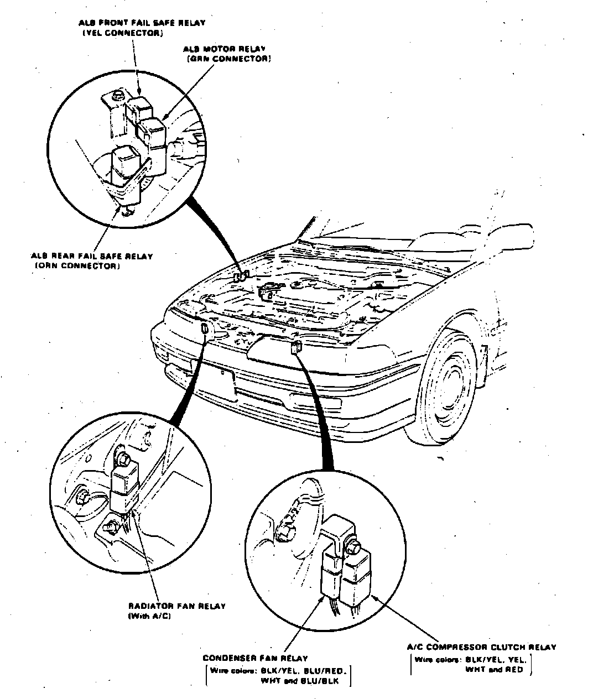

Operation CHARM
: Car repair manuals for everyone.
Home
>>
Acura
>>
1990
>>
Integra L4-1834cc 1.8L DOHC FI
>>
Repair and Diagnosis
>>
Heating and Air Conditioning
>>
Relays and Modules - HVAC
>>
Condenser Fan Motor Relay
>>
Locations
Condenser Fan Motor Relay: Locations
Engine Compartment Relay Locations.:

LH Front Of Engine Compartment
Applicable to: 1990